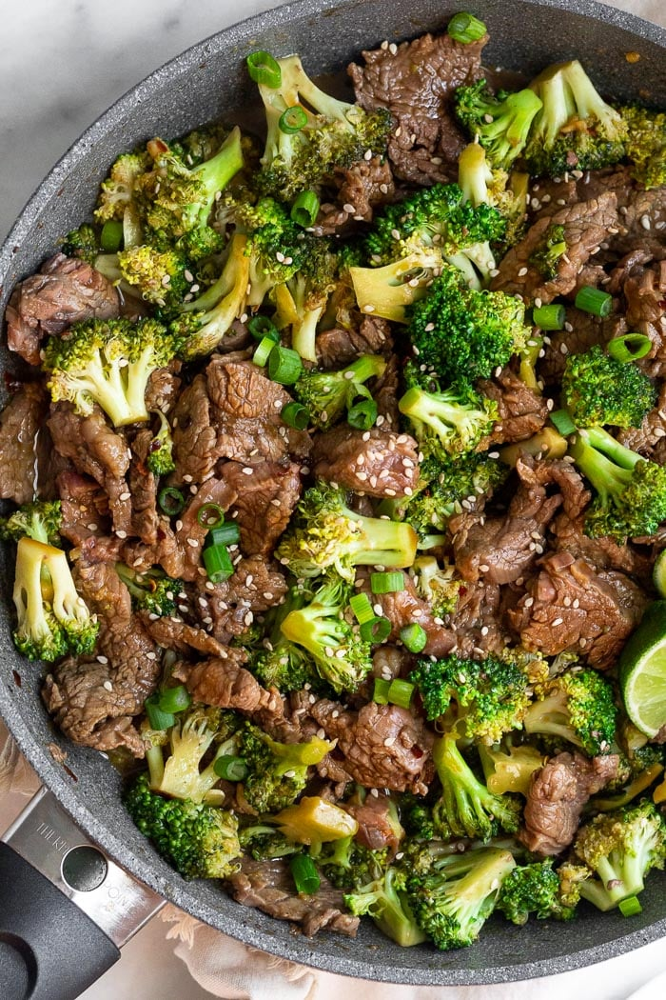

Beef and Broccoli

Preparation:
- Make sauce
- Cut meat and cook halfway with minced garlic
- Add broccoli and sauce
- Reduce while covered
- Divide into 8oz portions with 4oz rice each
Ingredients
- 2lbs Beef flank steak
- 180g Light soy sauce
- 180g Bone broth
- 52g Brown sugar
- 16g Corn startch
- 55g Hoisin sauce
- 30g Garlic
- 4g Ginger
- Red pepper flakes
- 1 1/4lb Broccoli
| Calories |
Fat |
Carbs |
Protein |
| 600 |
15g |
61g |
55g |